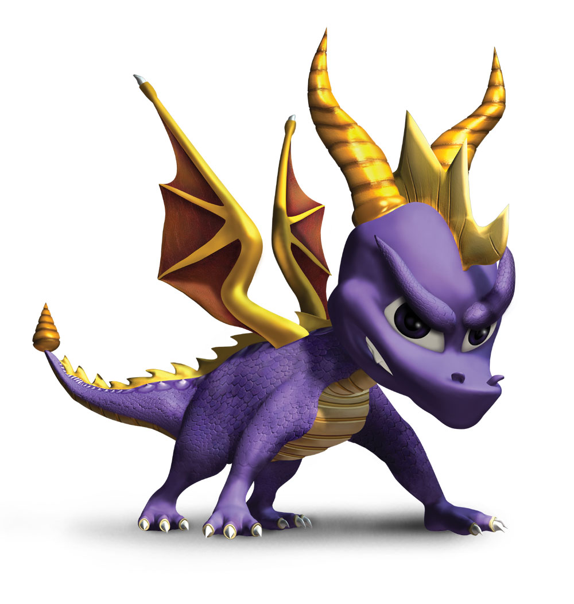

| Home | Personagens | Empresas | Fale Conosco |
|
Crash Bandicoot e uma serie de jogos criada por Andy Gavin e Jason Rubin que consiste basicamente nas aventuras do bandicoot geneticamente alterado Crash que luta para impedir os planos do cientista do mal Neo Cortex e seus capangas. A acao do jogo se passa nas ficticias Ilhas N. Sanity, um arquipelago situado na costa noroeste da Australia, mas outros lugares sao relevantes. A serie comecou em 1995 e no momento, a franquia contem um total de 18 jogos diferentes.  Spyro e o personagem do jogo Spyro the Dragon, um jogo eletronico de plataforma lancado pela Insomniac Games para PlayStation 1 em 10 de Setembro de 1998. Este jogo marca a estreia do personagem Spyro e o primeiro da serie de jogos Spyro the Dragon. Ele narra as aventuras de um pequeno dragao chamado Spyro e o seu amigo libelula Sparx. O jogo se tornou muito popular no console chegando a empatar com Crash Bandicoot e fazendo do personagem um dos icones de jogos o console. |